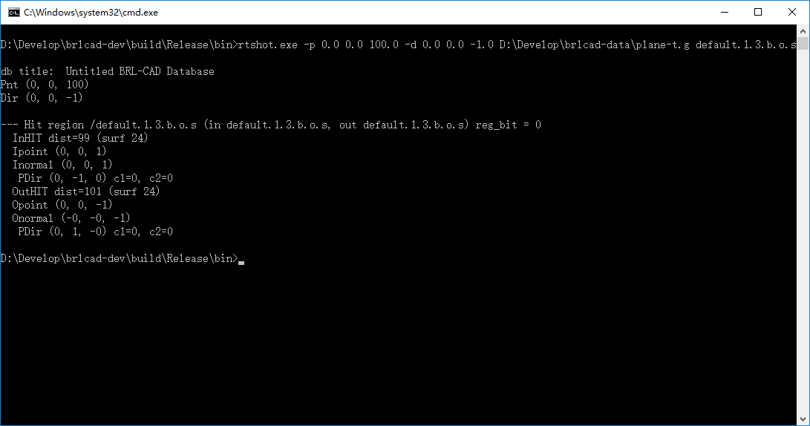
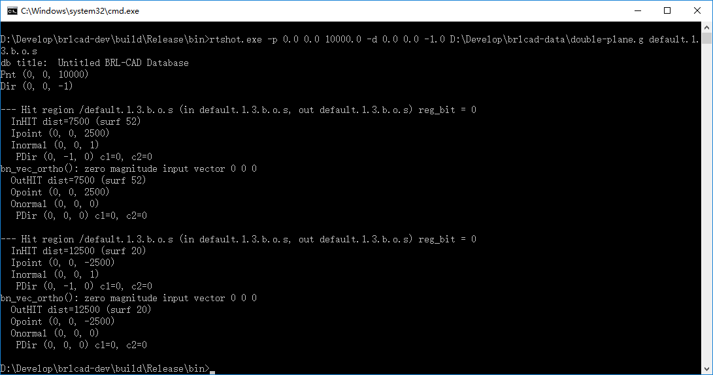
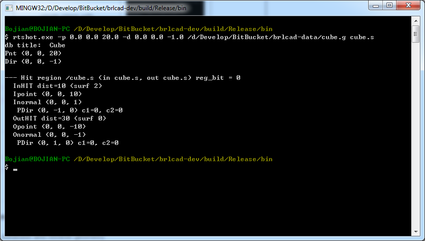

Bojian Wu
ustcbjwu [AT] gmail.com
Chinese Academy of Sciences (CAS)
Bonding Period
[Texts marked with red are recent works, and I will update it frequently.]
Warming up on IRC
IRC, short for Internet Relay Chat, is mainly designed for group communication in discussion forums(called channels), usually, it is very popular in open source software development circle because it collects developers from all around the world, so we can communicate with each other freely, exchange ideas and make progress together.
BRL-CAD community operates in the #brlcad channel on the Freenode IRC network (irc.freenode.net:6667). The logs can be found here.
My nickname there is registerd as boj. It is really convenient for us to communicate, usually I will paste my unsolved problems there, everyone is warm-hearted, they are glad to help others. Here is the log last time I had problems when compiling the source code, thank @brlcad sincerely, he patiently guided me step by step and helped to solve the problem.
Compilation
Usually, I use Microsoft Visual Studio 2012 on Windows 7 as my development environment. After downloading the source code, we need to run CMake to generate VS project that we can use to compile BRL-CAD. Notice that, on Windows, we should choose ALL_BUILD item as the StartUp Project and compile it in order to avoid some strange and annoying warnings and errors. Several minutes later, the code will be compiled successfully.(Please refer to this log, thank @brlcad and @starseeker for reminding me that.)
Reading the manual
Always, it is suggested to start with the official manual. When reading these documents, I gradually learn how to use basic tools like MGED, NIRT and so on and get to know some terminologies used in BRL-CAD. I think it should be the first step to go for further understanding the code.
Basic concepts in BRL-CAD
BoT Bag of Triangles is a BRL-CAD primitive object used for representing triangle mesh objects.
MGED Multiple-Device Geometry Editor is currently the primary geometry editor in BRL-CAD. By default, MGED will provide a graphical user interface for modeling, editing, render, and managing geometry models.
Generating BoT model from *.obj
[BUGS: CRT memory leak in debug mode] Recently, I try to use 'obj-g.exe' (on Windows 7) to generate BoT models from *.obj file, but in debug mode (actually, it works well in release mode), I detect the memory leak, with @starseeker's help, I find where it occurs, then give a rough solution and submit a patch. I have tested the modified code with a simple *.obj file[download], it works for me. (If my solution is not reasonable or problematic, please let me know, it would be much appreciated.) By the way, here is my error information when running the program and @starseeker gives me some memory leak detection information.
The command line I run is like this: obj-g.exe -o p -H 2 plane.obj plane-t.g
With different arguments provided to the command, the resulting BoT models differ. For example, with '-o p -H 2' shown above, it means that we can generate a BoT model in plate mode with thickness value equaling to 2mm. But if without any arguments, the command will run under its default settings.
For more information about using this tool, just type obj-g.exe in the command line window, and you will get what you need.
[IMPORTANT NOTES] As mentioned above, the parameter '-H' is used for assigning thickness value to BoT, please be aware that, this value is only valid for open BoT. I quickly go through the source code of obj-g, there is a closure test before outputting to BoT, it means that if the input mesh is already closed, the default output type should be *RT_BOT_SOLID*.(Thank @d_rossberg for making me be aware of this issue.)
[Please refer to this function in obj-g.c for more details: void process_b_mode_option(...)]
Then, how to generate a plate mode cube? Aha... @d_rossberg gives me some clues, that is we can build it manually. Based on his guidance, I write this file, and then use g2asc.exe to transform the plain txt to *.g file that is used in MGED. It works for me. :)
By the way, @brlcad also throws an approach to generate plate mode cube, it contains a series of commands in MGED and actually it is a very useful interactive method. Basically, we can use adjust command in MGED to change the mode of a BoT, for more details, please refer to this log.
Ray tracing of plate mode BoT
At this stage, I use obj-g.exe just mentioned above to generate several examples here and use rtshot.exe to do simple ray tracing. The output and visualized results are shown below. It is a more intuitive understanding of plate mode BoT.[Please click image to zoom in]
| Models (Visualized in MGED) |
Description | Ray tracing results | |
|---|---|---|---|
| Output | Visualization | ||
| single plane without thickness | - | ||
 |
single plane with thickness (2mm) |
 | - |
| double plane without thickness |  | - | |
 |
double plane with thickness (2mm) |
- | |
| cube without thickness |  | ||
| cube with thickness (2mm) (generated manually) |
|||
{kind=link}
{kind=link}
{kind=link}
{kind=link}
{kind=link}
{kind=link}
{kind=link}
{kind=link}
Visualization of 'plate mode' for BoT primitives
In bot.c, void rt_bot_plot(...)(about line 913) is called when plotting BoT primitives in MGED, so basically if we change something here, it should change the rendering result accordingly. Here is my code.
Pipeline of rtshot
- Open database and retrieve geometry
- Open database(with mapped file checking) and initialize database internal data structure(db_i) instance
- Import raw data and look up global attribute values table
- Initialize ray tracing internal data structure(rt_i) instance
- Database walking tree(A little bit confusing)
- Build regions table
- Prepare geometry for raytracing
- Boolean tree optimization(like rewriting X - A - B as X - (A + B))
- Build space partitioning tree
- Perform ray tracing
- Generate ray intersection partitions table
Ray tracing of plate mode B-rep (TBD)
| Models | Description | Ray tracing results (click to zoom in) |
|---|---|---|
| - | - | - |